Project Overview
This project demonstrates a comprehensive cloud-native approach to deploying a full-stack web application using modern DevOps practices. The application features an Angular frontend hosted on AWS S3, with a Spring Boot backend running on Amazon EKS (Elastic Kubernetes Service), and data persistence managed through Amazon RDS.
Repositories Involved
- Frontend: https://github.com/srngx/project-frontend
- Backend: https://github.com/srngx/project-backend
- Terraform Infra: https://github.com/srngx/project-infra
Architecture
Infrastructure Components
- Frontend: Angular application hosted on AWS S3
- Backend: Spring Boot application deployed on Amazon EKS
- Database: MySQL on Amazon RDS
- CI/CD: Jenkins pipelines for automated deployment
Technology Stack
- Frontend: Angular, HTML, CSS, JavaScript
- Backend: Spring Boot (Java)
- Database: MySQL
- Infrastructure: AWS (S3, EKS, RDS)
- DevOps Tools: Jenkins, Docker, Kubernetes, Terraform
- Version Control: Git with feature branch workflow
Key Implementation Highlights
Infrastructure as Code
The project utilizes Terraform to provision and manage the AWS infrastructure, enabling reproducible deployments and infrastructure version control.
Containerized Backend
The Spring Boot application is containerized using Docker and deployed to Kubernetes, providing scalability and resilience.
Automated CI/CD Pipelines
Separate Jenkins pipelines handle the build and deployment processes for both frontend and backend components:
- Backend pipeline: Code pull, Maven build, Docker image creation, and Kubernetes deployment
- Frontend pipeline: Code pull, npm build, and S3 deployment
Branching Strategy
The project implements a structured branching strategy with feature, development, and main branches to support collaborative development and controlled releases.
Deployment Process
- Infrastructure provisioning with Terraform
- Database initialization and schema setup
- Backend service deployment to Kubernetes
- Frontend application build and deployment to S3
- Configuration of network connectivity between services
Project Benefits
- Scalability: Kubernetes orchestration allows for easy scaling of backend services
- Cost Efficiency: Serverless frontend hosting minimizes infrastructure costs
- Automation: CI/CD pipelines reduce manual deployment effort and potential errors
- Maintainability: Separation of concerns with distinct repositories for frontend and backend
- Resilience: Load-balanced backend services ensure high availability
Project Workflow
Frontend and backend will have their own seperate repository and pipelines. and both pipelines should be executed with jenkins.
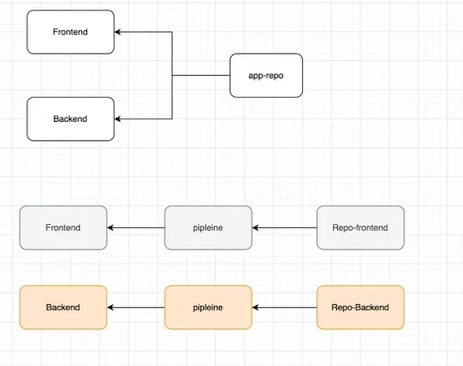
Step 1: Launch Infra with Terraform
Clone this repo either in your local or ec2 instance where terraform is installed and setuped.
git clone https://github.com/srngx/project-infraNote: you can edit the files to give your own unique bucket name and can change other resources name.
terraform apply --auto-approveThis will launch eks cluster, RDS db and S3 bucket.
Step 2: Import the database into RDS db.
After 15 resources gets created successfully you can import the database into newly created RDS db instance.
git clone https://github.com/srngx/project-infra.gitHere you can find springbackend.sql file import it to database
mysql -h <db-endpoint> -u admin -p springbackend < springbackend.sqlpassword would be Redhat123
Login to database to Verify if the database is successfully imported
mysql -h <db-endpoint> -u admin -p
show databases;
use springbackend;
show tables;Step 3: Create Repository for Project backend
-
Goto github.com and create new repository for storing backend files
-
upload the backend file from this repository to yours
https://github.com/srngx/project-backend.gitafter pushing code to main in your github repo
-
Create two new branches in your github repo
- dev branch
- feature branch
switch to feature branch and create new file
Dockerfile
FROM openjdk:17-jdk-slim
COPY target/*.jar /opt
EXPOSE 8080
CMD java -jar /opt/spring-backend-v1.jarCreate new Directory deploy and put kubernetes manifests files
deployment.yaml
apiVersion: apps/v1
kind: Deployment
metadata:
name: backend-app
labels:
app: backend-app
spec:
selector:
matchLabels:
app: backend-app
replicas: 2
template:
metadata:
labels:
app: backend-app
spec:
containers:
- name: backend-app
image: <your-dockerhub-repo-name>/spring-backend:latest
ports:
- containerPort: 8080services.yaml
apiVersion: v1
kind: Service
metadata:
name: backend-app
spec:
selector:
app: backend-app
ports:
- protocol: TCP
port: 8080
targetPort: 8080
type: LoadBalancerand lastly create pipeline.groovy in root of repo
pipeline {
agent any
stages {
stage ('code-pull') {
steps {
git branch: 'dev', url: 'https://github.com/<your-username>/project-backend.git'
}
}
stage ('code-Build') {
steps {
sh 'mvn clean package'
}
}
stage ('Deploy-k8s') {
steps {
sh '''
docker build . -t archsarangx/spring-backend:latest
docker push <your-docker-repo>/spring-backend:latest
docker rmi <your-docker-repo>/spring-backend:latest
kubectl apply -f ./deploy/
'''
}
}
}
}and push to code to feature branch In github create pull request to merge the feature branch into dev branch accept the pull request
Step 4: Install Prerequisitics
Install maven
sudo apt install maven -y
Install and configure Kubectl
curl -LO "https://dl.k8s.io/release/$(curl -L -s https://dl.k8s.io/release/stable.txt)/bin/linux/amd64/kubectl"sudo install -o root -g root -m 0755 kubectl /usr/local/bin/kubectlInstall docker
sudo apt install docker.io -ysudo systemctl enable --now dockerInstall aws-cli
sudo apt install unzip -y
curl "https://awscli.amazonaws.com/awscli-exe-linux-x86_64.zip" -o "awscliv2.zip"
unzip awscliv2.zip
sudo ./aws/installConfigure aws-cli
aws configure --profile <yourprofilename>
Create aws cli user from aws web console and add ID and secret key
Update Kubeconfig
aws eks update-kubeconfig --name <your-cluster-name> --region your-region --profile <your aws profile name>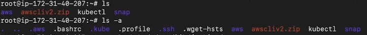 Now after all these dotfiles created in home in order to jenkins able to use them we should move them to jenkins user directory
Move all config files to jenkins directory
cp -R .aws .kube /var/lib/jenkins
Give Jenkins user ownership to directory and all subfolders
chown -R jenkins:jenkins /var/lib/jenkinsand add jenkins user to docker group
gpasswd -a jenkins dockerStep 5: Start Jenkins Server in EC2
Launch Ec2 instance for our jenkins server here all our programs (kubectl, maven, jenkins, aws-cli, java) will be configured
Launch EC2 install of following specifications:
- Ram: 8GB
- Storage: 40 GB
- CPU: at least 2
This could be t2.large
Install Jenkins:
Install java-17
apt install openjdk-17-jdk -yInstall Jenkins
sudo wget -O /usr/share/keyrings/jenkins-keyring.asc \
https://pkg.jenkins.io/debian-stable/jenkins.io-2023.key
echo "deb [signed-by=/usr/share/keyrings/jenkins-keyring.asc]" \
https://pkg.jenkins.io/debian-stable binary/ | sudo tee \
/etc/apt/sources.list.d/jenkins.list > /dev/null
sudo apt-get update
sudo apt-get install jenkinsLaunch Jenkins Service
systemctl enable --now jenkinsThis will enable the jenkins service and start it.
Visit the jenkins server
https://<ec2-instance-ip>:8080
(make sure you enable port 8080 in security groups for outside access)
Add some plugins in jenkins
- pipeline plugin
- stageview plugin
Create new Item in jenkins and create pipeline for backend deployment
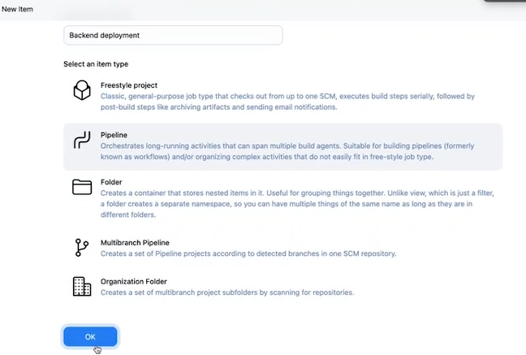
for Definition select Pipeline Script from SCM add repository url for github project backend repo that you have created give the name of the branches as dev and scriptpath be pipeline.groovy save and apply and try to run the file
ofcourse you gonna get error in pipeline because we havent added database endpoint in backend source code yet.
Database connection In order to make communication between backend and database you need to establish connection by providing credential of database to backed source code.
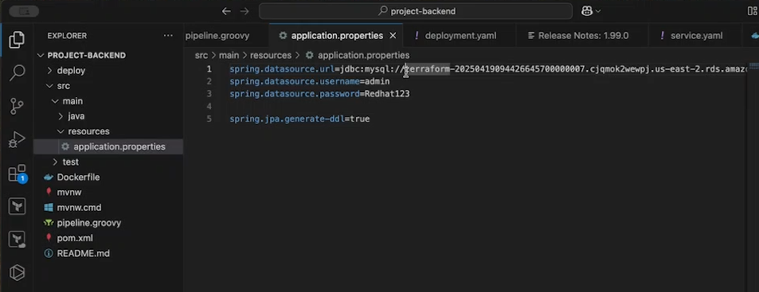
Locate the database connection file Its in src/main/resources/application.properties make appropriate changes here and push the latest code to github repository and rerun the pipeline.
After successful running of pipeline check for pods and endpoint of loadbalancer to access the backend url 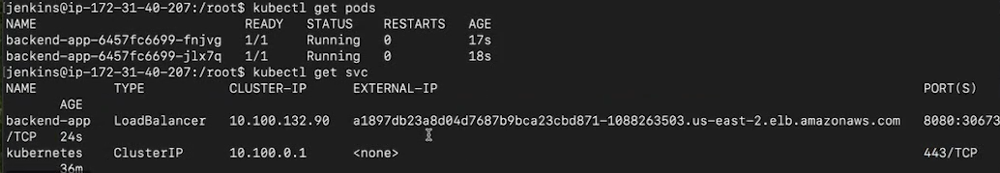
kubectl get pods
kubectl get svc
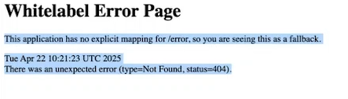
That url should show this whitelabel error it means its working correctly.
Step 6: Frontend Deployment
We are going to use same git branch strategy for frontend deployment as well.
Create a new repo in github for frontend. copy the source code from here
git clone https://github.com/srngx/project-frontend.gitalso we need to install nodejs and angular in instance.
sudo apt install nodejs npm -ysudo npm install -g @angular/cli@14.2.1push the code into github repo create two branches
- dev
- feature
now create a pipeline file in this repo
create new file pipeline.groovy
pipeline {
agent any
stages {
stage ('code-pull') {
steps {
git branch: 'dev', url: 'https://github.com/your-username/project-frontend.git'
}
}
stage('code-build') {
steps {
sh '''
npm install
ng build
'''
}
}
stage('code-deploy') {
steps {
withCredentials([aws(accessKeyVariable: 'AWS_ACCESS_KEY_ID', credentialsId: 'aws-creds', secretKeyVariable: 'AWS_SECRET_ACCESS_KEY')]) {
sh '''
aws s3 cp --recursive dist/angular-frontend s3://your-bucket-name
'''
}
}
}
}
}Step 7: Configure and deploy
Add loadbalancer endpoint in source code 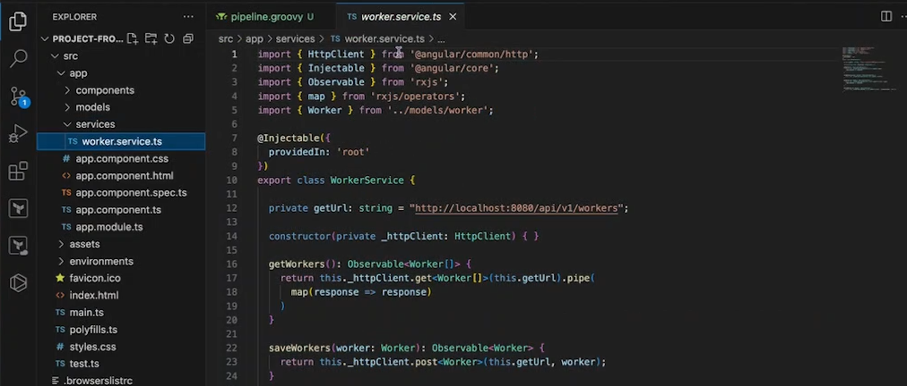
In your frontend code locate /src/app/services/worker.service.ts
and in private getUrl: string = "http://localhost:8080/api/v1/workers";
and your loadbalancer endpoint
"http://<url-loadbalancer-endpoint>:8080/api/v1/workers";
like this way.
save changes and push to the repo in dev branch
Add aws credential in jenkins Add aws credential plugin 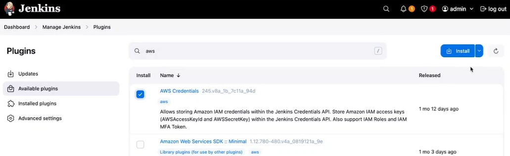
Goto manage and add global credentials 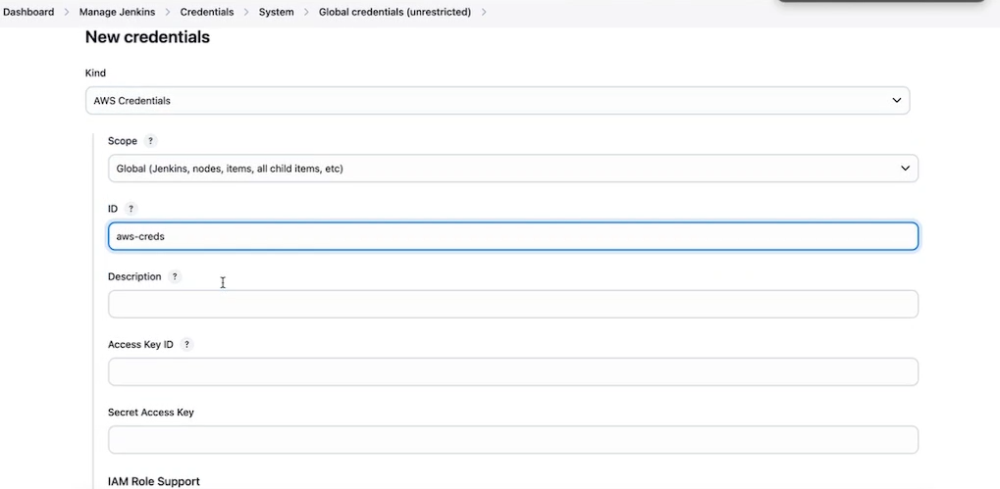 Now in generate syntax you can get aws credential option 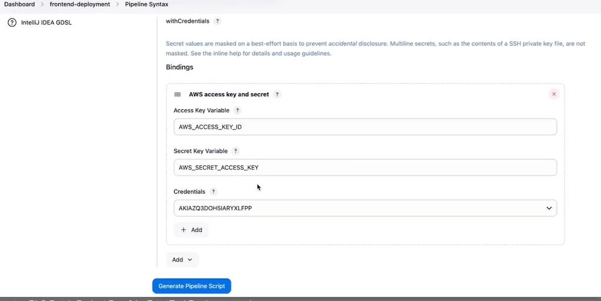
Create pipeline and deploy 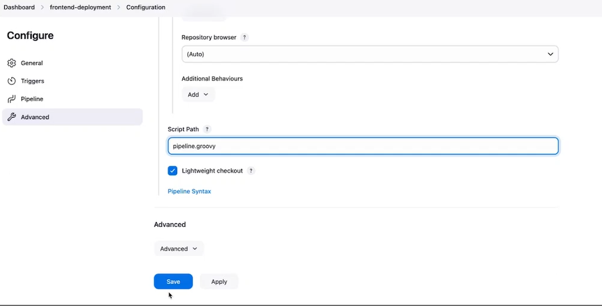 Now pipeline should be finished successfully. 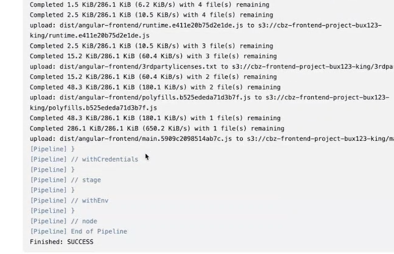
Access s3 bucket url it should see page like this 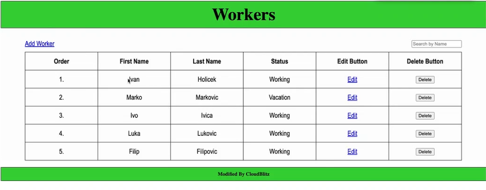
You can try adding removing data from table and it should reflect in mysql database as well.
Thanks for Reading!